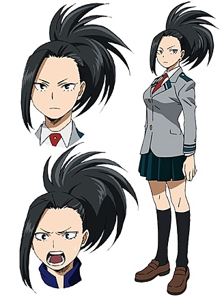

Момо Яойорозу
Момо Яойорозу
- Пол: ♀ Женский
- Рост: 173 см.
- Возраст: 16
- Группа крови: A
- Родился в: Японии
Момо Яойорозу, также известная, как Героиня всего на свете: Креативность — вице-президент Класса 1-A школы Юэй, в которую поступила ввиду официальной рекомендации. Тренируется, чтобы стать профессиональным героем.
Мы должны начать сначала и работать! И если мы не будем искренне воодушевлять друг друга... мы никогда не станем лучшими героями!
Внешность
Момо – высокая девушка-подросток с достаточно зрелым для её возраста телосложением. У неё чёрные волосы с чёлкой справа, которые завязаны сзади в большой остроконечный конский хвост.

Во время занятий она носит стандартную женскую школьную форму, состоящую из серого пиджака с бело-зелеными полосками, белой рубашки, красного галстука, складчатой тёмно-зелёной юбки, чёрных гольфов и коричневой обуви.
Её Геройский Костюм состоит из простого красного облегающего наряда с обнажёнными частью центра её туловища, руками и ногами, и с большим поясом, чтобы она могла более свободно использовать свою причуду.
Личность
Момо – рассудительный и преданный человек с явными задатками лидера. В сложных или опасных ситуациях она обычно спокойна и уравновешенна, хотя и способна впасть в панику. В своем стремлении быть честной и помочь своим одноклассникам стать лучшими героями она может казаться слишком резкой в своих высказываниях касаемо ошибок окружающих. Помимо этого, она готова помогать другим ученикам с их занятиями. Момо развивается как самоотверженная героиня, которая осознает, что спасение других – одна из важнейших вещей, даже если это означает потерю временной лицензии героя.
После поражения в схватке с Фумикаге Токоями во время спортивного фестиваля Юэй Момо потеряла долю уверенности и начала сомневаться в своей способности принимать быстрые решения в критических ситуациях. Это чувство усугубилось во время краткосрочной геройской практики у про-героини Увабами: Момо считала, что та выбрала ее, несмотря на то, что она была «недостойной ученицей». Однако, благодаря ободрениям Шото во время учебной битвы против преподавателей, Момо снова стала уверенной в принятии быстрых решений, поняв, что у разных людей могут быть разные способности, дополняющие друг друга. Даже будучи пойманной своим оппонентом, она не отчаялась и, используя причуду, смогла победить.
Момо, как правило, очень рассудительна, даже в опасных ситуациях, например, когда злодеи напали на USJ., она не впала в панику. Когда это произойдёт, она будет безнадежно разрываться между различными вариантами, пытаясь выяснить самый умный ход, но будет не в состоянии решить, какой из них она должна выбрать.
Возможность помочь своим друзьям в учебе Момо принимает с волнением и восторгом. Она склонна ненароком показывать, насколько богатой является ее семья, но окружающие понимают, что делает она это случайно. Несмотря на взрослый характер и исключающую любые глупости манерность, Момо можно найти вовлеченной в глупые ситуации, например, черлидинг (хотя она и не выражает энтузиазма по этому поводу).
Момо ожидаемо хладнокровно относится к неожиданным ситуациям; её также мало заботит возможность потерять большей части одежды во время боя, так как она знает, как создать новый комплект.
Причуда
 Создание: Причуда Момо даёт ей возможность создавать любые неживые материалы из её неприкрытых участков тела путём молекулярного манипулирования её жировыми клетками. Она утверждает, что чем больше она ест, тем больше материала, с которым она может работать. До тех пор, пока у неё есть понимание структуры материала, она может создать его, хотя ей требуется больше времени, а также больше поверхности её кожи для создания более крупных объектов.
Создание: Причуда Момо даёт ей возможность создавать любые неживые материалы из её неприкрытых участков тела путём молекулярного манипулирования её жировыми клетками. Она утверждает, что чем больше она ест, тем больше материала, с которым она может работать. До тех пор, пока у неё есть понимание структуры материала, она может создать его, хотя ей требуется больше времени, а также больше поверхности её кожи для создания более крупных объектов.